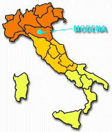
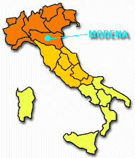

Organized by
In cooperation with
Endorsed by
|
|
Seminar Chair
Seminar Co-Chair
Organizing Committee
Faculty of Engineering
University of Modena and Reggio Emilia
Via Vignolese, 905
41100 Modena, Italy

This seminar will be focused on the issues in computational electromagnetics at high frequencies and should attract engineers, researchers and students working in the related disciplines. Topics loosely associated with microwave power engineering and positioned at different stages of their development (from conceptual formulations to the algorithms and their practical implementations) are welcome.
The meeting aims to reveal some major modern trends in development and usage of numerical techniques and computer technologies suitable for modeling of a variety of scenarios in microwave power engineering.
The Seminar will be preceded by the half-day Modeling Workshop featuring presentations of the software packages known for their use in modeling of systems and processes of microwave power engineering:
Live demonstrations of operational functionalities of the simulators will be given by the representatives of the software companies developed these tools and brought them on the market: COMSOL, CST and QWED respectively.
| Submission of titles and abstracts: | January 31, 2008 |
| Notification of acceptance: | February 1, 2008 |
| Submission of summaries: | February 11, 2008 |
| Preliminary program: | February 22, 2008 |
| Seminar & Final program: | February 28-29, 2008 |
Thursday, February 28, 2008
Friday, February 29, 2008
From the center of the city, the Faculty of Engineering can be reached by:
Modena is situated in the Padana plain, in the north of Italy, in Emilia Romagna, 40 km West from Bologna.
 
The monumental complex constituted by the Cathedral of San Geminiano and the Civic Tower, a.k.a. the Ghirlandina, faces Piazza Grande and is located along the axis of the historical Via Emilia, at the center of the medieval zone of the city. The Cathedral of Modena is one of the most important Romanesque monuments in Europe, both in its a rchitecture and decorations which can now be fully appreciated thanks to the recent restoration.
When traveling by plane, the easiest way to reach Modena is via Bologna’s International Airport Guglielmo Marconi which is conveniently connected with Modena by AerBus. The bus leaves every two hours; travel time is about 50 min, one way fare – €10, round-trip – €18.
Modena is connected by direct trains with many major European destinations including Milan, Zurich, Frankfurt and Paris. Train itineraries, schedules, ticket purchases are available via Rail Europe and Trenitalia.
{kind=link}